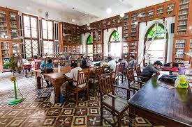
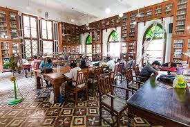

The David Sassoon Library, established in 1870, stands as a testament to Mumbai's rich cultural heritage. Named after the influential Jewish businessman and philanthropist David Sassoon, the library was designed to provide a haven for knowledge and learning in the heart of the city. Its Indo-Saracenic architectural style features intricately carved wooden facades, arched entrances, and beautiful stained glass windows that enhance its aesthetic appeal. The library houses an extensive collection of books and periodicals, making it a valuable resource for scholars and the general public alike. Visitors can enjoy a tranquil environment perfect for reading and research. The library also plays a role in preserving Mumbai's literary history and serves as a venue for various cultural events and activities. Today, the David Sassoon Library remains a popular destination for both locals and tourists, reflecting the city's dedication to education and heritage. Best Time to Visit Morning Hours: Early morning is perfect for a quiet visit and to enjoy the library's peaceful atmosphere. Weekdays: Visiting on weekdays avoids crowds, allowing for a more relaxed experience. Ticket Information Entry: The library is free to enter for visitors. Ticket Price: No fees are required for entry. Address David Sassoon Library Location: Opp. Flora Fountain, Address: 4, S. B. Singh Marg, Kala Ghoda, Fort, Mumbai, Maharashtra 400001, India.
 
